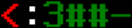
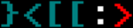
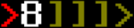

"CyRats"
Идея
Псевдо-realtime многопользовательская стратегия в постапокалиптическом сеттинге.

Концепция
Игрок - некий выживший в постапокалиптическом мире, единственный житель некоего бункера. Покинуть бункер нет никакой возможности - снаружи радиация и другое потенциально жильё недостижимо. Единственный способ добыть пищу - отправить наружу роботов (действующих автономно, т.к. радиация мешает нормальному дистанционному управлению) в надежде, что оные добудут что-то съедобное (обеззараживать то пищу мы можем, но не можем её создать). У игрока есть запас еды, который постоянно уменьшается.
Роботы - кибернетические крысы-мародёры - умеют находить еду, но также умеют и защищать себя от потенциальной угрозы и даже нападать на конкурентов, ведь игрок - увы, не единственный в округе "крысовод".
Каждая крыса состоит из корпуса (hull), вмещающего до трёх модулей. Каждый модуль влияет на три характеристики робо-крысы: атаку, защиту и "здоровье". Итоговое значение конкретной характеристики равно сумме значений этой характеристики у модулей. Пример: имеем три модуля 3:0:2, 1:1:1 и 1:4:2 (атака:защита:здоровье), крыса же будет иметь характеристики (3+1+1):(0+1+4):(2+1+2), т.е. 5:5:5.
Модули встречаются на поверхности, плюс к этому каждый игрок начинает игру с 4-6 модулями (успел добыть до конца света). Всего в "мире" модулей 125 - кол-во сочетаний трёх характеристик, значения которых находятся в диапазоне 0..4.
Для запуска крысы в мир необходимо:
- чтобы крыса состояла из трёх модулей,
- крысовод имел достаточно накопленной энергии (см.ниже).
Энегрия вырабатывается генератором убежища с постоянной скоростью. Максимальное кол-во энергии, которое можно накопить, ограничено. Для запуска крысы необходимо кол-во энергии, равное сумме характеристик первой (Для крысы 5:5:5 нужно 15 единиц энергии) и это же значение определяет запас энергии крысы.
Выпущенные крысы передают крысолову телеметрию (это единственный сигнал, который пробивается через радиационный фон) - значение характеристик, текущий уровень здоровья, текущий запас энергии, а так же обстановку в непосредственных окрестностях. Энергия убывает с течением времени. Время от времени могут происходить следующие события:
- крыса находит пищу и помещает его в багажник (см.ниже),
- крыса находит бесхозный модуль и помещает его в багажник,
- крыса встречает другую крысу и начитается битва (см.ниже).
Каждая крыса имеет на своём корпусе багажник. Объем багажника определяется кол-вом модулей, находящихся на данный момент в корпусе - от одной до трёх ячеек. Одну ячейку может занимать единица еды, либо трофейный модуль. Битвы крыс проходят по следующему сценарию:
- крысы атакуют друг друга по по очереди;
- урон, наносимый здоровью атакуемой крысы вычисляется с учётом атаки атакующего и защиты атакуемого;
- после получения урона крыса имеет шанс потерять один случайно выбранный модуль и с некоторым шансом - окончательно (см.ниже про потери);
- крыса, потерявшая все модули "умирает" (см.ниже про смерть крысы), даже если у неё не кончилось здоровье;
- крыса, потерявшая всё "здоровье", выходит из битвы, возможно, оставляя победителю трофей (см.ниже);
- крыса, "убившая" противницу, с некоторым шансом получает трофей и продолжает миссию.
Потери: получая урон, крыса может лишиться модуля. Модуль может упасть на землю, либо может быть уничтожен (убирается из игры). При отпадении модуля уменьшается грузоподъемность. Если оной становится недостаточно, то выпадает случайный предмет из багажника). Если крыса теряет последний модуль, то она умирает. Трофей: победившая крыса получает один из предметов, выпавших в процессе битвы на землю, либо (если на земле ничего нет) - с некоторым шансом единицу груза побеждённой крысы либо один из её модулей. Смерть крысы означает невозможность вернуться в убежище хозяина. Таковая возможна при полной потере модулей. Возвращение крысы на базу происходит, если (один из вариантов)
- у крысы закончилась энергия,
- у крысы закончилось здоровье,
- у крысы закончилось место в багажнике.
Еда, добытая, вернувшейся крысой, пополняет запас еды игрока. Трофейные модули в последствии могут быть использованы для модификации созданных крыс и для создания новых. Game Over: если у игрока кончилась еда и он не может создать и/или запустить крыс, то игрок выбывает из игры ("умирает с голоду").
Игровая сессия
Все игроки попадают в мир одновременно. Кол-во игроков в одной сессии ограничено. Сессия завершается выбыванием всех игроков, кроме последнего. По результатам сессии строится статистика - общая длительность, время, прожитое каждым игроком и проч. Игровые сессии могут отличаться рядом параметров
- скоростью течения времени,
- скоростью прироста энергии и размером её запаса,
- скоростью убывания еды и размером её запаса,
- скоростью появления еды на поверхности (или некоторым счётным кол-вом еды),
- максимальной длительностью (нужна для завершения сессий, в которых игроки ушли в строго "мирный" режим и занимаются только сбором пищи).
Манипулируя вышеуказанными параметрами, можно получить как быстротечные сессии, так и "zero playing game", где время течёт очень медленно и пользователь большую часть времени пассивно смотрит за логом событий и пару раз в день (или реже) совершает активные действия (запускает крыс). Второй "режим" может быть интересен в случае мобильных клиентов. Сервер предоставляет возможность присоединиться к некоторой объявленной игровой сессии (сессиям) в течении некоторого времени перед её началом (сессия объявляется заранее).
GUI
Интерфейс предполагается "псевдопсевдографический" — графика, но на вид всё олдскульно текстовое. Крысы могут иметь вид:
- 
- 
- 
У игрока всегда доступен интерфейс компонования имеющихся модулей в новых крыс, при наличии модулей и корпусов. Также всегда виден лог событий "с поверхности" с записями вида
[12:45:01] Крыса №3 нашла еду
[12:46:15] Крыса №1 была побеждена в схватке